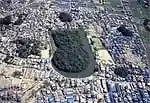
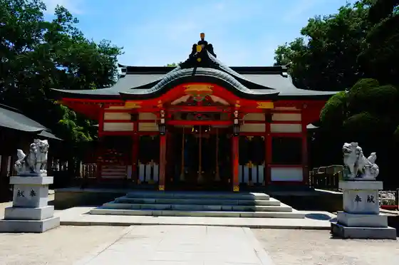
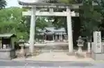
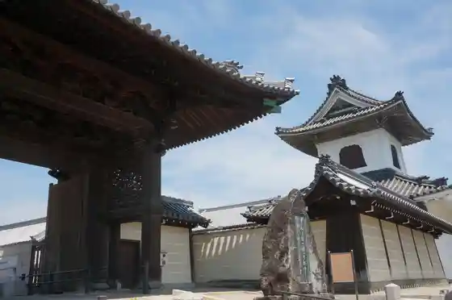

Daichu Park
Yamatotakada, Nara · 0745-22-1101 · Official / source link
Tsukiyama Burial Mound
Yamatotakada, Nara · Official / source link

Ryuo Miya (Ishi Sono Za Taku Mushi Tama Shrine)
Yamatotakada, Nara · 0745-52-6855 · Official / source link

Tenma Shrine (Yamatotakada)
Yamatotakada, Nara · 0745-53-0826 · Official / source link

Sen Ritsu Tera
Yamatotakada, Nara · 0745-52-5180 · Official / source link

Meisho Tera
Yamatotakada, Nara · 0745-52-4283 · Official / source link
Benten Shrine (Yamatotakada)
Yamatotakada, Nara · Official / source link
Kasuga Shrine Daichu (Yamatotakada)
Yamatotakada, Nara · Official / source link
Noguchi Inari Shrine (Yamatotakada)
Yamatotakada, Nara · Official / source link
Ten Shrine (Yamatotakada)
Yamatotakada, Nara · 0745-52-3382 · Official / source link
Tora Bai no Haka
Yamatotakada, Nara · 0745-53-8200 · Official / source link
Miroku Tera
Yamatotakada, Nara · 0745-22-7578 · Official / source link
Fudo In (Yamatotakada)
Yamatotakada, Nara · 0745-52-1669 · Official / source link
Hase Honji
Yamatotakada, Nara · 0745-52-1738 · Official / source link
Hachiman Shrine (Yamatotakada)
Yamatotakada, Nara · 0745-52-3382 · Official / source link